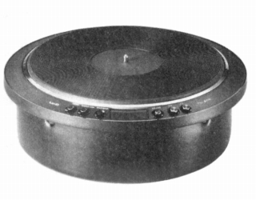
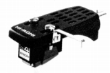
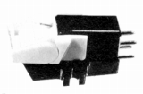
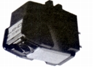
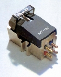
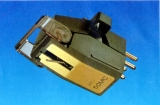
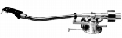

HITACHI（ヒタチ）/Lo-D （ ローディ）
日立のオーディオブランド。ギャザードエッジスピーカー、パワーMOS FETアンプ、初のセパレート型CDプレーヤーなどが有名。1980年代後半から自主的な新規開発は停止し、ブランド自体も1990年代に消えている。
アナログ関連製品ついては、ひととおりの製品を発売しているが、特に力を入れていたと感じさせる分野もなく、中途半端な印象がある。1983年頃、プレイヤー1機種を残し、このジャンルから撤退。

（TU-800。単体ターンテーブルまで出したメーカーにしては製品点数が少ない） Lo-D
（ローディ）の製品を以下のように分類する。（この分類は個人的な意見で、メーカーの分類ではありません）
�T.カートリッジ
�@MM型

(MT-11F)
(MT-202E)

�AMC型

(MT-50MC)�U.アーム

(AU-800)
�V.その他
あまり資料がない。手元にあるのはストレートアーム用ヘッドシェル1点と、電動式クリーナー2点。